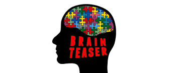
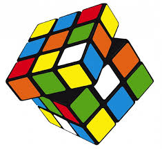

ABOUT ME
BRIEF-INTRO
NOTHING MORE THAN A SIMPLE MAN
| NAME | KRISHNA CHAITANYA PAPPU |
| PLACE OF STAY | VISAKHAPATNAM |
| DATE OF BIRTH | 5th MARCH 1998 |
| NATURE | LESS INTERACTIVE AND MODEST,TIMID |
MY HOBBIES AND LIKES
CRICKET
 I like the game cricket.I used to play it all the way in my childhood and was also a very adrent viewer of the game.I gave up following the game of late.But,recently I have played it again after many days and saw that I didn't forget the game although I am not fit currently.I always supported Team India but I actually liked the game of Australian players and my favourite player happens to be the former wicket-keeper of the Australian team- ADAM GILCRIST.
I like the game cricket.I used to play it all the way in my childhood and was also a very adrent viewer of the game.I gave up following the game of late.But,recently I have played it again after many days and saw that I didn't forget the game although I am not fit currently.I always supported Team India but I actually liked the game of Australian players and my favourite player happens to be the former wicket-keeper of the Australian team- ADAM GILCRIST.
MUSIC
I like to hear very soft music which is really soothing to the heart.I rejooice such music and am really happy to hear it.I am not so much in favour of fast beat,although I like a few of them now and then.
MATHEMATICS AND REASONING
This is one of the areas which I like very much.This doesn't mean that I am all very good at it.I am an average person in this,but I like this because it gives a lot of satisfaction to get an answer while the other half is always there that is equally cumbersome if you are really struckup somewhere cluelessly.The famous Rubick's cube is one of the things which come to mind.I learnt it but in a very naive manner following a book.I would rather like to do it intutively and in a problem-specific manner.
CONTACT ME